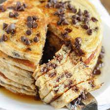

Pancake Recipe

Description
A pancake also known as a hot-cake, griddlecake, or flapjack.
It is a flat cake, often thin and round, prepared from a starch-based
batter that may contain eggs, milk and butter and cooked on a hot surface
such as a griddle or frying pan, often frying with oil or butter. It is a
type of batter bread. Archaeological evidence suggests that pancakes were
probably eaten in prehistoric societies.
Ingredients
- 1 cup all-purpose flour
- 2 tablespoons white sugar
- 2 teaspoons baking powder
- 1 teaspoon salt
- 1 egg, beaten
- 1 cup milk
- 2 tablespoons melted butter
- chocolate chips
Steps
- In a large bowl, mix flour, sugar, baking powder and salt.
- In another bowl, mix milk, egg and butter and chocolate chips.
-
Make a well in the center of the first mix and pour in milk, egg, butter
and chocolate chips. Mix until smooth.
- Heat a lightly oiled griddle or frying pan over medium high heat.
-
Pour or scoop the batter onto the griddle, using approximately 1/4 cup
for each pancake
- Brown on both sides and serve hot.